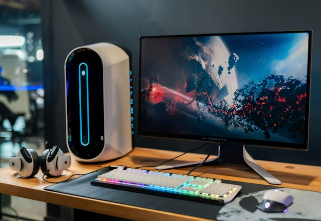

Main Content
About index 1

A computer is a machine that can be programmed to automatically carry out sequences of arithmetic or logical operations (computation). Modern digital electronic computers can perform generic sets of operations known as programs, which enable computers to perform a wide range of tasks. The term computer system may refer to a nominally complete computer that includes the hardware, operating system, software, and peripheral equipment needed and used for full operation, or to a group of computers that are linked and function together, such as a computer network or computer cluster. A broad range of industrial and consumer products use computers as control systems, including simple special-purpose devices like microwave ovens and remote controls, and factory devices like industrial robots. Computers are at the core of general-purpose devices such as personal computers and mobile devices, such as smartphones. Computers power the Internet, which links billions of computers and users. Early computers were meant to be used only for calculations. Simple manual instruments like the abacus have aided people in doing calculations since ancient times. Early in the Industrial Revolution, some mechanical devices were built to automate long, tedious tasks, such as guiding patterns for looms. More sophisticated electrical machines did specialized analog calculations in the early 20th century. The first digital electronic calculating machines were developed during World War II, both electromechanical and using thermionic valves. The first semiconductor transistors in the late 1940s were followed by the silicon-based MOSFET (MOS transistor) and monolithic integrated circuit chip technologies in the late 1950s, leading to the microprocessor and the microcomputer revolution in the 1970s. The speed, power, and versatility of computers have been increasing dramatically ever since then, with transistor counts increasing at a rapid pace (Moore's law noted that counts doubled every two years), leading to the Digital Revolution during the late 20th and early 21st centuries. Conventionally, a modern computer consists of at least one processing element, typically a central processing unit (CPU) in the form of a microprocessor, together with some type of computer memory, typically semiconductor memory chips. The processing element carries out arithmetic and logical operations, and a sequencing and control unit can change the order of operations in response to stored information. Peripheral devices include input devices (keyboards, mice, joysticks, etc.), output devices (monitors, printers, etc.), and input/output devices that perform both functions (e.g. touchscreens). Peripheral devices allow information to be retrieved from an external source, and they enable the results of operations to be saved and retrieved.About index 2
A computer is a machine that can be programmed to automatically carry out sequences of arithmetic or logical operations (computation). Modern digital electronic computers can perform generic sets of operations known as programs, which enable computers to perform a wide range of tasks. The term computer system may refer to a nominally complete computer that includes the hardware, operating system, software, and peripheral equipment needed and used for full operation, or to a group of computers that are linked and function together, such as a computer network or computer cluster. A broad range of industrial and consumer products use computers as control systems, including simple special-purpose devices like microwave ovens and remote controls, and factory devices like industrial robots. Computers are at the core of general-purpose devices such as personal computers and mobile devices, such as smartphones. Computers power the Internet, which links billions of computers and users. Early computers were meant to be used only for calculations. Simple manual instruments like the abacus have aided people in doing calculations since ancient times. Early in the Industrial Revolution, some mechanical devices were built to automate long, tedious tasks, such as guiding patterns for looms. More sophisticated electrical machines did specialized analog calculations in the early 20th century. The first digital electronic calculating machines were developed during World War II, both electromechanical and using thermionic valves. The first semiconductor transistors in the late 1940s were followed by the silicon-based MOSFET (MOS transistor) and monolithic integrated circuit chip technologies in the late 1950s, leading to the microprocessor and the microcomputer revolution in the 1970s. The speed, power, and versatility of computers have been increasing dramatically ever since then, with transistor counts increasing at a rapid pace (Moore's law noted that counts doubled every two years), leading to the Digital Revolution during the late 20th and early 21st centuries. Conventionally, a modern computer consists of at least one processing element, typically a central processing unit (CPU) in the form of a microprocessor, together with some type of computer memory, typically semiconductor memory chips. The processing element carries out arithmetic and logical operations, and a sequencing and control unit can change the order of operations in response to stored information. Peripheral devices include input devices (keyboards, mice, joysticks, etc.), output devices (monitors, printers, etc.), and input/output devices that perform both functions (e.g. touchscreens). Peripheral devices allow information to be retrieved from an external source, and they enable the results of operations to be saved and retrieved.
About index 2
A computer is a machine that can be programmed to automatically carry out sequences of arithmetic or logical operations (computation). Modern digital electronic computers can perform generic sets of operations known as programs, which enable computers to perform a wide range of tasks. The term computer system may refer to a nominally complete computer that includes the hardware, operating system, software, and peripheral equipment needed and used for full operation, or to a group of computers that are linked and function together, such as a computer network or computer cluster.
A broad range of industrial and consumer products use computers as control systems, including simple special-purpose devices like microwave ovens and remote controls, and factory devices like industrial robots. Computers are at the core of general-purpose devices such as personal computers and mobile devices, such as smartphones. Computers power the Internet, which links billions of computers and users.
Early computers were meant to be used only for calculations. Simple manual instruments like the abacus have aided people in doing calculations since ancient times. Early in the Industrial Revolution, some mechanical devices were built to automate long, tedious tasks, such as guiding patterns for looms. More sophisticated electrical machines did specialized analog calculations in the early 20th century. The first digital electronic calculating machines were developed during World War II, both electromechanical and using thermionic valves. The first semiconductor transistors in the late 1940s were followed by the silicon-based MOSFET (MOS transistor) and monolithic integrated circuit chip technologies in the late 1950s, leading to the microprocessor and the microcomputer revolution in the 1970s. The speed, power, and versatility of computers have been increasing dramatically ever since then, with transistor counts increasing at a rapid pace (Moore's law noted that counts doubled every two years), leading to the Digital Revolution during the late 20th and early 21st centuries.
Conventionally, a modern computer consists of at least one processing element, typically a central processing unit (CPU) in the form of a microprocessor, together with some type of computer memory, typically semiconductor memory chips. The processing element carries out arithmetic and logical operations, and a sequencing and control unit can change the order of operations in response to stored information. Peripheral devices include input devices (keyboards, mice, joysticks, etc.), output devices (monitors, printers, etc.), and input/output devices that perform both functions (e.g. touchscreens). Peripheral devices allow information to be retrieved from an external source, and they enable the results of operations to be saved and retrieved.